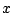

A spatial multigrid algorithm for isotropic neutron transport is presented in - geometry. The problem is discretized with discrete ordinates in angle and corner balance finite differencing in space. Spatial smoothing is accomplished by a four color block Jacobi relaxation, where the diagonal blocks correspond to four cell blocks on the spatial grid. A bilinear interpolation operator and its transpose are used for the grid transfer operators. Encouraging preliminary results are presented for homogeneous domains. Heterogeneous domains are also discussed, especially the case of a vacuum region surrounded by a diffusive region.